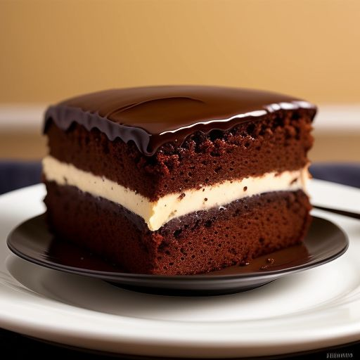

Choccy Chocolatecake

Description
Indulge in the decadent delight of our rich chocolate cake, where moist layers of velvety cocoa goodness are enveloped in a luscious, smooth chocolate ganache. Every bite melts in your mouth, offering a perfect balance of deep chocolate flavor and sweet satisfaction. This cake is a true celebration of chocolate in its most exquisite form.
Ingredients
Steps
- 1 package devil's food cake mix
- 1 package instant chocolate pudding mix
- 1 cup vegetable oil
- 1/2 cup warm water
- 4 large eggs
- 2 cups semisweet chocolate chips
- Preheat your oven to 350°F and generously grease a 12-cup Bundt pan.
- In a large bowl, combine cake mix, pudding mix, sour cream, oil, water, and eggs, mixing until well blended.
- Fold in the chocolate chips.
- Pour the batter into the greased Bundt pan
- Bake in the preheated oven for 50 to 55 minutes, or until the top is springy to the touch and a toothpick inserted into the center of the cake comes out clean.
- Cool cake thoroughly in the pan for at least 1 ½ hours before inverting it onto a plate. Sprinkle powdered sugar on top if desired.